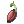
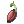
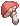
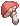
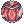
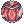

Foraging
Jump to navigation
Jump to search
- Foraging refers to a Monster Hunter: The Savage Coast mechanic or behavior. It is only applicable to High Rank Hunts.
Foraging is one of the three gathering activities that can be done on the Savage Coast.
Foraging allows you to collect herbs, fruits, seeds and shrooms which are used in crafting High Rank Shadow Gear and a variety of consumables through Combinations.
Be sure to always be energized while foraging as it gives you x2 rewards. You can eat soup at any base camp to refresh your energized ability.
Depending on your foraging rank you will be able to gather different materials:
- Level 1 allows you to get
 Blue Mushroom,
Blue Mushroom,  Medicinal Herb and
Medicinal Herb and  Insect Husk.
Insect Husk. - Level 2 allows you to get Citron,
 Adamant Seed and  Might Seed.
Adamant Seed and  Might Seed. - Level 3 allows you to get
 Golden Flower,  Nitroshroom and
Golden Flower,  Nitroshroom and  Zapshroom.
Zapshroom.
Foraging Tasks
Tasks for Level 1 Foraging
- To start foraging talk to Ramie, the foraging instructor.
- She gives you the ability to start foraging (You now have level 1 foraging).
Tasks for Level 2 Foraging
- Ramie tells you to forage 20 times, talk to her again to turn in the task. She gives you a
 Combination Kit.
Combination Kit.
- Use it with the ingredients in your inventory to be able to craft the consumables.
- Forage 50 times to get the next task.
- She tells you to craft 10
 Hunter's Potion.
Hunter's Potion.
- You need 1 Medicinal Herb and 1 Blue Mushroom for each potion.
- You need 1
- Talk to Ramie after completing the task, she lets you pick between the level 1 herbs.
- Forage 76 times to get the next task.
- She tells you to craft 5
 Scoutflies.
Scoutflies.
- You need 1
 Smelly Fish (catch it using Fishing) and 1 Insect Husk for each.
Smelly Fish (catch it using Fishing) and 1 Insect Husk for each.
- You need 1
- After completing the task she will reward you with Level 2 Foraging. You can now forage the level 2 herbs.
Task for Level 3 Foraging
- Forage 45 times to get the next task.
- Ramie will ask you to forage rare nodes 10 times, unlike normal nodes they can be foraged multiple times. A message will prompt that a rare node was found, giving the coordinates along with a blinking marker at the minimap.
- After completing the task get back to her.
- Now she wants you to find 2 Sproutrings. Just like rare nodes they can spawn from any forage you do, but unlike rare nodes they do not give any warning of spawning besides their spawn animation.
- Talk to Ramie after completing the task, she will give the option to pick between the level 2 herbs.
- Ramie now wants you to craft 5
 Stoneskin Extract.
Stoneskin Extract.
- You need 1 Adamant Seed and 1
 Dash Juice for each.
Dash Juice for each.
- To craft the Dash Juice you need 1
 Slimy Eel (catch it using Fishing) and 1 Insect Husk for each.
Slimy Eel (catch it using Fishing) and 1 Insect Husk for each.
- To craft the Dash Juice you need 1
- You need 1
- After completing the task go back to her, she lets you pick between
 Flash Bomb,  Large Barrel Bomb and
Flash Bomb,  Large Barrel Bomb and  Shock Trap.
Shock Trap. - She also rewards you with level 3 foraging. You can now forage the level 3 herbs.
How to Forage
- Talk to Ramie, the forage instructor to get the foraging skill.
- Make sure to be energized. (Eat soup)
- Stand next to a node, and use your interact skill.
Nodes
There are 9 types of nodes on the Savage Coast;
Might Seed
Medicinal Herb
Blue Mushroom
Nitroshroom
Zapshroom
Golden Flower
Citron
Insect Husk


| Monster Hunting | ||
|---|---|---|
| Low Rank Hunts • High Rank Hunts | ||
| Hunting Mechanics | Rage • Hate • Skills • Alterations | |
| Player Roles | Tank • Damage • Healer • Utility | |
| Monsters |
1-Star Hunts | Garanth • Nyia |
| 2-Star Hunts | Garronath • Nysori | |
| 3-Star Hunts | Angnar • Zaedronath | |
| Unreleased | Sybaris • Vakaris • Hrungnir • Anko & Mako | |
| Regular Monsters | Ambient Monsters | |
| Rewards | Shadow Gear (Low Rank, High Rank (1/2-star), Angnar, Zaedronath) • Shadow Gear Refinement
Archangel Wings • Fallen Angel Wings • Ancient Hero • Temporal Armors • Violet Halo • Magical Booster • Bio Weapon Helms | |
| Gathering & Combinations | Mining • Fishing • Foraging • Combinations | |
| Lore | The Savage Coast • The Wyvern • Astrid • Seruel • Delphina • Sain • Will • Reidin Kurs | |